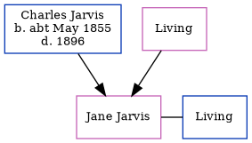

Jane Denny (née Jarvis)
[ Home ] | [ Calendar ] | [ Surnames Index ] | [ Family History ]The child of Charles Jarvis and Mary AndrewsJane Jarvis and was married to Frank Cecil Harcourt Denny.
Parents
- Charles George was born c. May 1855
- Mary Ann Jane
Family Tree
Generated by ged2site. Last updated on Feb 18, 2025